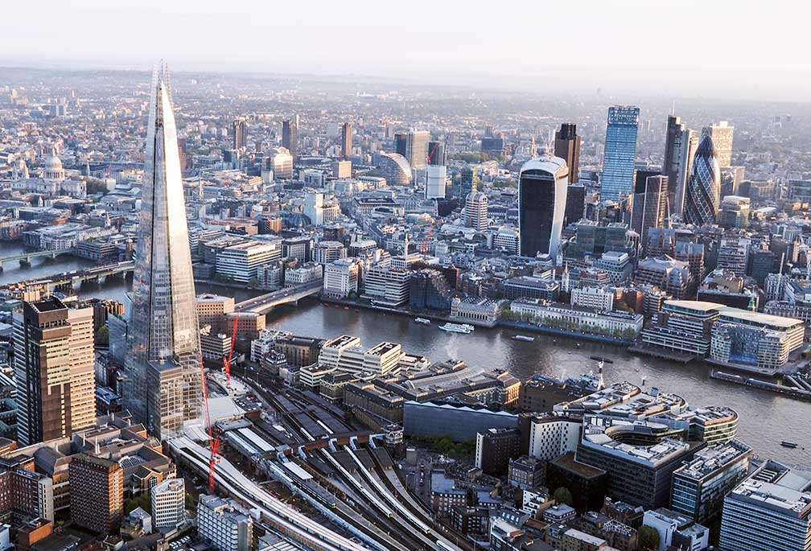

-

Barcelona
Barcelona is a major cultural, economic, and financial centre in southwestern Europe, as well as the main biotech hub in Spain.As a leading world city, Barcelona's influence in global socio-economic affairs qualifies it for global city status.
-
Hawai
Hawaii is a state in the Western United States, located in the Pacific Ocean about 2,000 miles from the U.S. mainland. It is the only state outside North America, the only state that is an archipelago, and the only state in the tropics
-

London
London, the capital of England and the United Kingdom, is a 21st-century city with history stretching back to Roman times. At its centre stand the imposing Houses of Parliament, the iconic ‘Big Ben’ clock tower and Westminster Abbey, site of British monarch coronations.Across the Thames River, the London Eye observation wheel provides panoramic views of the South Bank cultural complex, and the entire city.
-
Munich
Munich, Bavaria’s capital, is home to centuries-old buildings and numerous museums. The city is known for its annual Oktoberfest celebration and its beer halls, including the famed Hofbräuhaus, founded in 1589.
-

Sydney
Sydney, capital of New South Wales and one of Australia's largest cities, is best known for its harbourfront Sydney Opera House, with a distinctive sail-like design.Sydney Tower’s outdoor platform, the Skywalk, offers 360-degree views of the city and suburbs.
-

Tokyo
Tokyo, Japan’s busy capital, mixes the ultramodern and the traditional, from neon-lit skyscrapers to historic temples. The opulent Meiji Shinto Shrine is known for its towering gate and surrounding woods.
-

Bali
Bali is a province of Indonesia and the westernmost of the Lesser Sunda Islands. East of Java and west of Lombok, the province includes the island of Bali and a few smaller neighbouring islands, notably Nusa Penida, Nusa Lembongan, and Nusa Ceningan.
-

Paris
Also known as the Latin Quarter, the 5th arrondissement is home to the Sorbonne university and student-filled cafes. It's also known for its bookshops, including the famed Shakespeare & Company.
-

New York
New York City comprises 5 boroughs sitting where the Hudson River meets the Atlantic Ocean. At its core is Manhattan, a densely populated borough that’s among the world’s major commercial, financial and cultural centers.